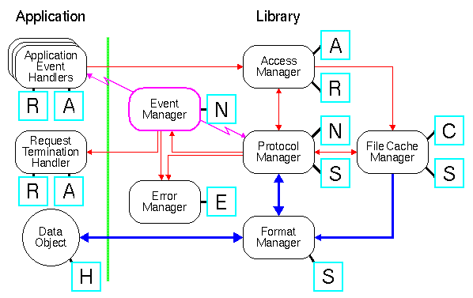
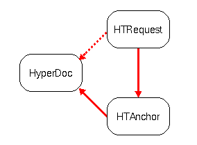

Core Classes and APIs
The Library Core contains a set of objects central to the Library. Each of
the core modules as explained in section "Control
and Data Flow"are relying on one or more of these objects. This section
describes the relationship between the core modules, the core objects
and the relationship between the core objects themselves.
The figure below is very similar to the one in section
"Control and Data Flow", but it also introduces
the core objects associated.

-
 HTRequest
HTRequest
-
The HTRequest object contains information necessary to handle a
request issued by the application. It contains information about the method
to be used (for example "GET" and "PUT"), user preferences (language, content
type etc.) specific for this request, where the output of the data object
should go etc. A HTRequest object exists until the request reaches a final
state, either success or failure, after which it can be discarded. Normally,
a HTRequest object is created by the application, but the Library is capable
of creating them on its own under certain circumstances. An example is when
the Library creates a "Post Web" as explained in section
"Building a POST Web, an API for PUT and POST".
-
 HTAnchor
HTAnchor
-
HTAnchor objects represent any document which may be the source
or destination of hypertext links. The HTAnchor object contains all information
about the object, whether it has been loaded, metainformation like language,
media type etc., and any relations to other objects. The Library defines
two anchor classes: a parent anchor and a child anchor. The former contains
information about whole data objects and the latter contains about subparts
of a data object. The HTAnchor object is a generic superclass of both parent
anchors and child anchors. Section "Anchor Objects"
describes anchors and their relations in more detail.
-
 HTNet
HTNet
-
The HTNet is a network object which contains all information required
to read and write from the network. It contains the current socket descriptor
(or ANSI C file descriptor) used for reading and writing, which input buffer
to use and where to put the data once they are read. It also contains timing
information on how long it takes to connect to a remote host and how many
times it has tried to connect. This information is used by the
DNS Cache in order to optimize access on multi
homed hosts. The HTNet object is also a key element in the libwww thread
model where it is used to identify a "thread". The libwww thread model is
explained in "Description of libwww Threads".
-
 HTError
HTError
-
The HTError object contains information about errors occured along
the way when a request is handled by the Library. Errors can be nested and
the object is independent of the natural langue used to pass information
to the User. The definition of the messages may be handled by the application
- or it can ignore it all together.
-
 HTStream
HTStream
-
The stream object accepts sequences
of characters. It is a destination of data which can be thought of much like
an output stream in C++ or an ANSI C-file stream for writing data to a disk
or another peripheral device. The broad definition makes streams very flexible
and they are used as the main method to transport data from the application
to the network and vise versa. The Library defines two stream classes: A
generic stream class and a specialized stream class for structured data using
SGML lexical tokens. The contents of the two classes is described in detail
in section "Streams Objects".
The following figure illustrates the relations between the core objects
themselves.

-
When an application issues a request the access manager binds the anchor
corresponding to a URL together with a request object. The binding exists
until the request reaches a final state after which the application can discard
the request object. Normally the anchor object stays in memory during the
whole life time of the application as the set of anchors represent the part
of the Web that the application has been in touch with including metainformation
etc.
-
The application can make a binding between the request object and the desired
destination for the data when it arrives, typically from the network. The
request object is by default bound to a
presentation stream which presents a hypertext
object to the user on the screen, but it can also be written to a file,
represented as source text etc.
-
If the file cache is enabled a cache object is created and linked to the
anchor object by the cache manager so that the access manager on any future
requests can use the cached version (if not stale). As mentioned, the cache
manager is yet to be fully designed, and the current approach may change.
-
If the data object is not found in the cache or in memory the protocol manager
is called by the access manager. The protocol manager then executes a specific
protocol module which creates a HTNet object and binds it to the request
object. The HTNet object is maintained uniquely by the protocol module and
is removed by the protocol module as soon as the communication with the remote
server reaches a final state.
-
The request object also has a link to any error information related to it.
At the end of the request this information is handled by the error manager
and an error message may be generated and passed to the user.
-
When data starts arriving, typically from the network, it is directed down
the stream chain which can either already exist or is created as data arrives
(stream chains are described in the section "Stream
Objects". In the case where the application is transmitting a data object
to a remote server, there are two steam chains directed in opposite directions:
one from the application to the network and one from the network to the
application.
-
The end of the stream chain is the stream that the user may have defined
when the request first was issued or it can be the default destination which
is presenting the information on the screen. Between the first and the last
stream in the stream chain there can be any number of other stream objects
performing operations either directly on the data, or on the stream flow
itself. A T-stream is an example of the latter where the stream flow is divided
into two.
-
The application receives the data arriving from the network via the "HText"
object (or any of the other stream interfaces as explained in section
The HTML Parser in the User's Guide).
Henrik Frystyk, libwww@w3.org,
@(#) $Id$